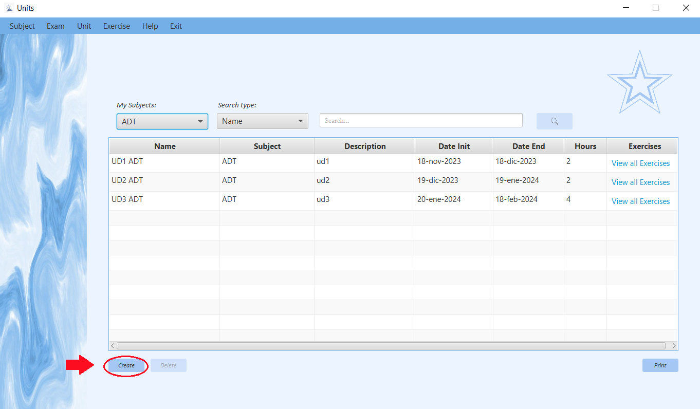
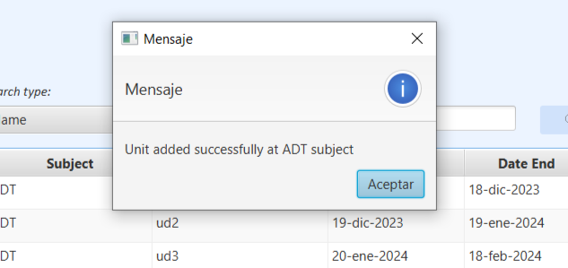
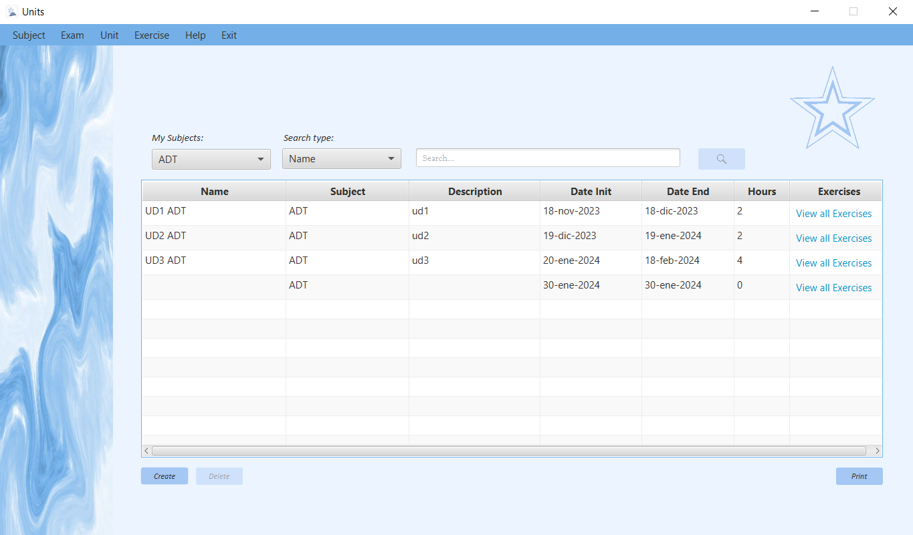
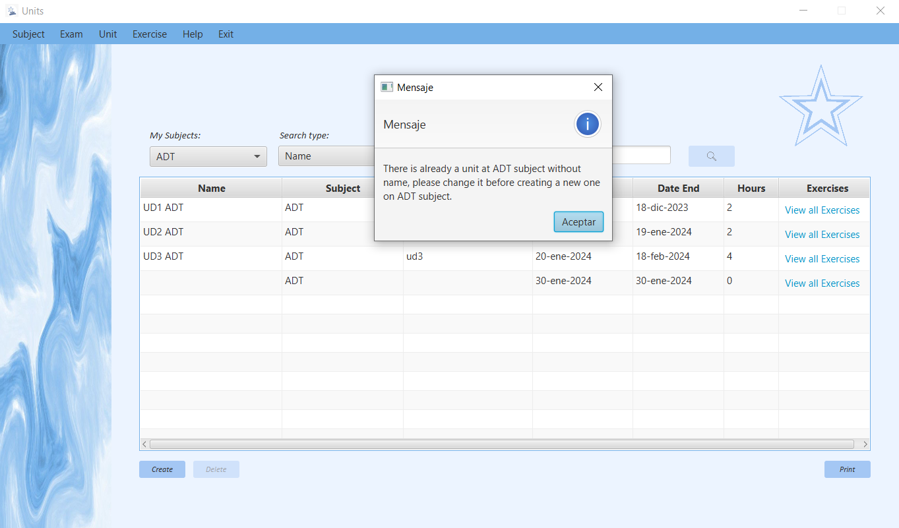

Dependiendo del tipo de usuario que inicie sesión en la aplicación podrá hacer una cosa u otra.
Si es de tipo "Teacher", el usuario podrá mediante los controles de los que dispone la ventana crear, modificar, buscar y eliminar las units de las subjects en las que este enseñando el usuario.
Si es de tipo "Student", el usuario solo podrá buscar las units de de las subjects en las que este previamente matriculado. Así mismo. ambos usuarios podrán generar un informe que contiene un listado de los unidades con sus correspondientes datos.
Para crear una Unit, tendras que hacer click en el botón de "Create" y este generara una Unit con valores por defecto en la tabla.
Si todo sale bien: saldra un mensajito de que se ha añadido una nueva unit
Despues de aceptar el mensaje la tabla se cargará con el nuevo valor
Si algo falla: Sera porque en una misma Subject no pueden haber dos Unit con el mismo nombre, por lo que antes de crear la unit con valores por defecto te conprobara que no existe una sin nombre en la misma subjects donde se creé.
Si sucede este problema aparecera una alerta avisando que añadas nombre a la unit que no tiene.
Otro problema podria ser que te has pasado de caracteres, ya que la celda solo permite 100 asi que serias avisado de que te has pasado del limite con este otro mensaje
//---------FOTOOOOOOO Error LIMITE CHARACTERSUna vez lo corrijas podras añadirla.
//---------FOTOOOOOOO Añadida con correción. Modificar UnitsAl ser una tabla editable puedes editar directamente la información que quieras clickando dos veces en el campo que quieras editar.
Borrar UnitsSe pueden borrar "Units" de dos maneras: Con el boton o con click derecho sobre la tabla.
En ambos casos se necesitara tener algo seleccionado en la tabla, si no el boton no se activara y si no el click derecho te avisara que selecciones una.
//---------FOTOOOOOOO DELETE desactivado //---------FOTOOOOOOO Seleccion == Delete activadoCuando se realice una de las dos acciones saldra una pregunta esperando confirmación para borrar la Unit seleccionada.
//---------FOTOOOOOOO Alert Are you sure?Si le das a la x o a cancelar desaparecera y entonces no se borrará nada.
Si le das a acceptar la unit se borrará y la tabla se actualizara.
//---------FOTOOOOOOO UNIT NO ESTAPulsando el botón Print se abrirá una ventana donde puede ver un documento que contiene un listado de los "Units" que existen en la aplicación.
//---------FOTOOOOOOO Pulso Print //---------FOTOOOOOOO REPORT